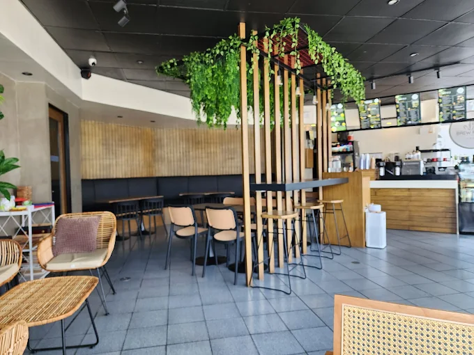

About Us
Brew Point Cafe is a locally owned coffee shop that takes pride in sourcing organic beans, crafting flavorful blends, and offering a cozy spot for community connection. We believe coffee is more than a beverage — it’s a culture, a ritual, and a way to bring people together.
Our Signature Products
Signature Latte
Creamy hot latte with a rich espresso base and a generous topping of whipped cream and cocoa drizzle.
Cold Brew
Chilled chocolate drink served in a dome cup, topped with whipped cream and chocolate shavings. Perfect for hot days.
Carrot Cake
Moist carrot cake slice topped with classic cream cheese frosting and a playful carrot-shaped icing detail.
How We Operate
Brew Point Cafe operates daily from 7 AM to 9 PM. We prioritize sustainable sourcing, and reduce waste through eco-friendly packaging. Our team of skilled baristas ensures every order is served with care and precision.